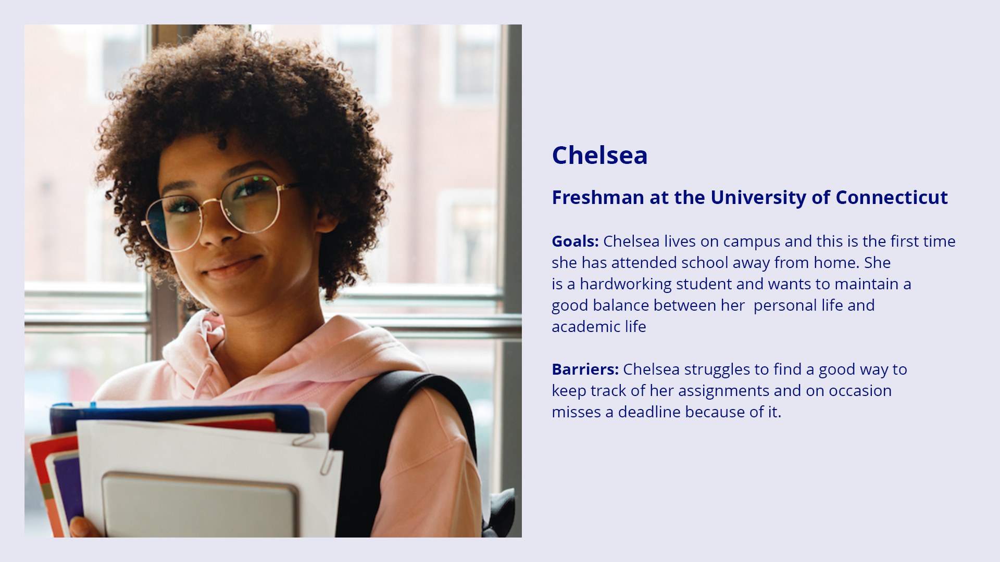

UCann App
Goal: Create a piece of Digital Media that solves a problem on campus
Summary
UCann is a concept app I designed and researched as part of a group project. We were tasked to solve a problem that affects students at UConn.
Timeline
September 2021 - December 2021
Role
UX Researcher and UX Designer
Finding our Problem
We narrowed down the topic of our problem to be adjusting to campus, however we needed to figure out what part of adjusting to campus was difficult. We started out by interviewing students with different backgrounds to hear their opinion on the transition of coming to school.
“It’s definitely been an adjustment but I think I got used to it pretty quickly.”
- In State Senior living off campus with roomates
“There's so much work so I feel like I dont have free time to myself”
- Out of State Freshman living on campus with a random roommate
Then, we conducted a survey which received 130 responses. This was to gauge the aspects of transitioning to school that gave students difficulty. The findings in this survey contradicted our initial assumption about students' difficulty getting adjusted to living on campus. Most students felt that on a scale of 1-5 they adjusted to living on their own at a 4. This data shocked us and caused us to pivot our problem statement.
The most difficult aspect of transitioning for students was time management (43.3%) and mental health (32.3%). We realized that these two issues were connected: If a user was able to improve their time management, then their mental health would improve. This led us to develop our problem statement
Problem Statement
How might we use a mobile app to improve time management skills for undergraduate students at UConn?
After focusing in our our problem, I reached out to an expert in the field of time management, Leo Lachut. Leo is the Director of the Academic Achievement Center.
Key Takeaways
There are 3 facets of Time Management: Attention Management, Life Management, and Self Regulation
Attention Management is how we can focus on a task without getting distracted. Life Management are the unexpected events that derail your plans. Self Regulation is our internal motivation to complete a task. Students track their assignments hour by hour rather than in a big picture sense
There is a correlation between mental health and time management
People suffer from Sunday Scary, which means they have a lot of anxiety for the impending week on sunday. Most heart attacks occur on Sundays.With poor mental health comes low motivation.
There are study techniques to help with motivation
Techniques such as the Pomodoro method, which breaks up the amount of work done at a time helps with students motivation. After COVID, students are experiencing social engagement fatigue, and are relearning study skills and social skills
Ideation Stage
We used Miro, a web application to help us with our ideation stage. We worked together to come up with 3 different digital media tools to solve our problem

Top 3 Ideas
YouTube Channel
The Youtube Channel would feature videos about time management that would be filmed by UConn Students
Group Chat
This Group Chat would act as an accountability partner and would include students that would allow students to set goals
Calendar App
This app would allow you to input your personal and academic assignments which would be featured in a calendar. Users would get notifications to hold them accountable for getting their assignments in on time.
User Persona
Based off of the Surveys and Interviews we conducted I constructed 2 user personas to better understand our target demographic and their pain points
Functionalities
- Personal and Academic Tasks: Manually input assignments
- Accountability: Mascot (Jonathan the Husky), Notifications that users can change the frequency of, Celebration Screens
- Mental Health: Pomodoro Timer, Mental Health Resources
- Paper vs. Virtual: Ability to convert calendar into a PDF to print
What's Next?
- Potential Users testing the app and giving feedback
- Coducting focus groups
- Interviews about the app
- Surveys about each of the aspects of the app
- Creating a team of students to develop the app
- Applying for UConn funding to allow for the point system
- Creating connections with local businesses for their support